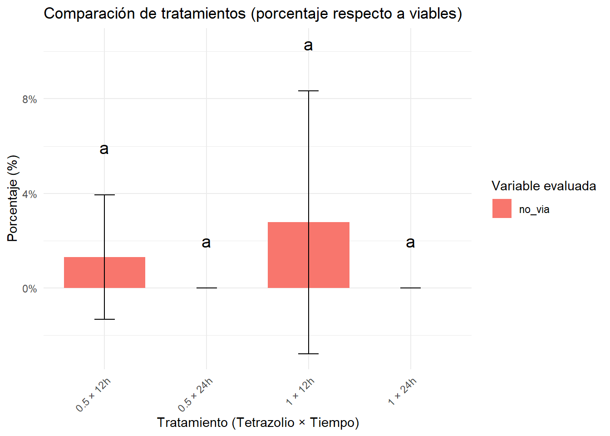
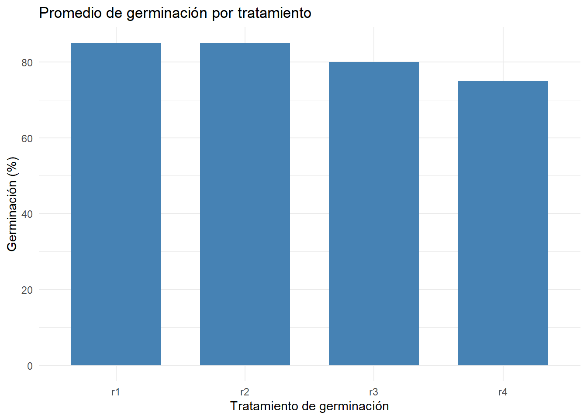

variables <-c("via_sindef", "via_leve", "via_sev", "no_via")resultado_final <-data.frame()for (var in variables) {formula <-as.formula(paste(var, "~ trat_comb + block"))}modelo <-aov(formula, data = datos) tukey <-HSD.test(modelo, "trat_comb", group =TRUE) letras <- tukey$groups %>%rownames_to_column("trat_comb") %>%rename(letra = groups) resumen <- datos %>%group_by(trat_comb) %>%summarise(media =mean(.data[[var]], na.rm =TRUE),sd =sd(.data[[var]], na.rm =TRUE),.groups ="drop" ) %>%left_join(letras, by ="trat_comb") %>%mutate(variable = var) resultado_final <-bind_rows(resultado_final, resumen)# Crear carpeta para guardar si no existeif (!dir.exists("graficos_tukey")) dir.create("graficos_tukey")# Gráfico combinado con porcentaje y letras Tukeygrafico <-ggplot(resultado_final, aes(x = trat_comb, y = media, fill = variable)) +geom_col(position =position_dodge(0.9), width =0.8) +geom_errorbar(aes(ymin = media - sd, ymax = media + sd),position =position_dodge(0.9), width =0.2 ) +geom_text(aes(label = letra, y = media + sd +2),position =position_dodge(0.9),size =5 ) +labs(title ="Comparación de tratamientos (porcentaje respecto a viables)",x ="Tratamiento (Tetrazolio × Tiempo)",y ="Porcentaje (%)",fill ="Variable evaluada" ) +scale_y_continuous(labels =function(x) paste0(x, "%")) +theme_minimal() +theme(axis.text.x =element_text(angle =45, hjust =1))print(grafico)

En la Figura se presenta la comparación de los tratamientos aplicados para la evaluación de la viabilidad de semillas de girasol mediante la prueba de tetrazolio, expresando los resultados como porcentaje respecto al total de semillas evaluadas. Se analizaron cuatro categorías: semillas viables sin defectos (via_sindef), viables con daño leve (via_leve), viables con daño severo (via_sev) y no viables (no_via), bajo cuatro combinaciones de concentración y tiempo de exposición al tetrazolio (0.5% × 12h, 0.5% × 24h, 1% × 12h y 1% × 24h). Los resultados fueron comparados mediante un análisis de varianza seguido de la prueba de Tukey HSD (α = 0.05).
Los valores más altos de viabilidad sin defecto se observaron en el tratamiento 1% × 24h, alcanzando aproximadamente un 75% de semillas con tinción uniforme y sin indicios de daño. Este tratamiento se ubicó en el grupo estadísticamente superior (“a”), lo que indica una diferencia significativa respecto a los demás. En contraste, el tratamiento 0.5% × 24h presentó el porcentaje más bajo de semillas viables sin defecto (~40%), clasificándose en el grupo inferior (“b”).
En la categoría de semillas viables con daño leve, no se observaron diferencias estadísticas marcadas entre tratamientos. Sin embargo, se evidenció una tendencia a una mayor proporción en el tratamiento 0.5% × 24h (~45%), aunque compartió grupo estadístico con otras combinaciones.
Para las semillas con daño severo, el tratamiento 0.5% × 24h mostró el porcentaje más alto (~10%) y se ubicó en el grupo “a”, mientras que los tratamientos con 1% (ambos tiempos) presentaron valores menores y estadísticamente inferiores (“b”). Esto sugiere que concentraciones más altas de tetrazolio permiten una mejor diferenciación entre tejidos viables y no viables, evitando la sobreestimación de daños.
Finalmente, en la categoría de semillas no viables, todos los tratamientos mostraron porcentajes bajos (<5%). Sin embargo, nuevamente el tratamiento 0.5% × 24h se distinguió por un valor ligeramente superior y por ubicarse en un grupo estadísticamente diferente (“a”) respecto a los tratamientos con 1%.
En conjunto, esto nos permiten deducir que el tratamiento de 1% de tetrazolio durante 24 horas proporciona la mejor diferenciación fisiológica de semillas de girasol, maximizando la identificación de semillas viables sin defecto y minimizando la clasificación errónea como dañadas o no viables.
datos$repeticion <-as.factor(datos$repeticion)resumen <- datos %>%group_by(repeticion) %>%summarise(media =mean(germ, na.rm =TRUE),sd =sd(germ, na.rm =TRUE),.groups ="drop" )ggplot(resumen, aes(x = repeticion, y = media)) +geom_col(fill ="steelblue", width =0.7) +geom_errorbar(aes(ymin = media - sd, ymax = media + sd), width =0.2) +labs(title ="Promedio de germinación por tratamiento",x ="Tratamiento de germinación",y ="Germinación (%)" ) +theme_minimal()

El grafico muestra que los porcentajes de germinación son altos y relativamente consistentes, oscilando entre aproximadamente 75% y 90%.
t1 y t2 presentan los porcentajes más altos (superiores al 85%), mientras que t3 y t4 son ligeramente más bajos.
La diferencia entre repeticiones no es muy marcada, pero t4 muestra una leve disminución, lo que podría ser resultado de variación experimental o condiciones puntuales distintas.
Comparación entre viabilidad y germinación
La viabilidad promedio fue del 89%, lo cual indica que una alta proporción de las semillas presentaban tejidos vivos metabólicamente activos. Esta prueba permite detectar semillas viables aun cuando no se manifieste un crecimiento inmediato. Por otro lado, la prueba de germinación mostró un porcentaje promedio de 81.25%, reflejando la proporción de semillas capaces de desarrollar plántulas normales bajo condiciones estándar.